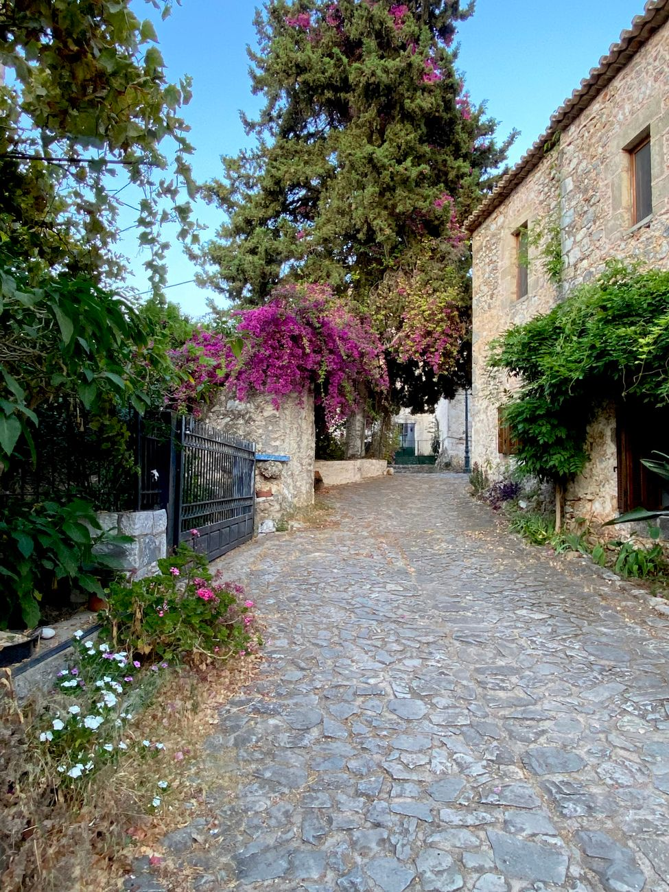
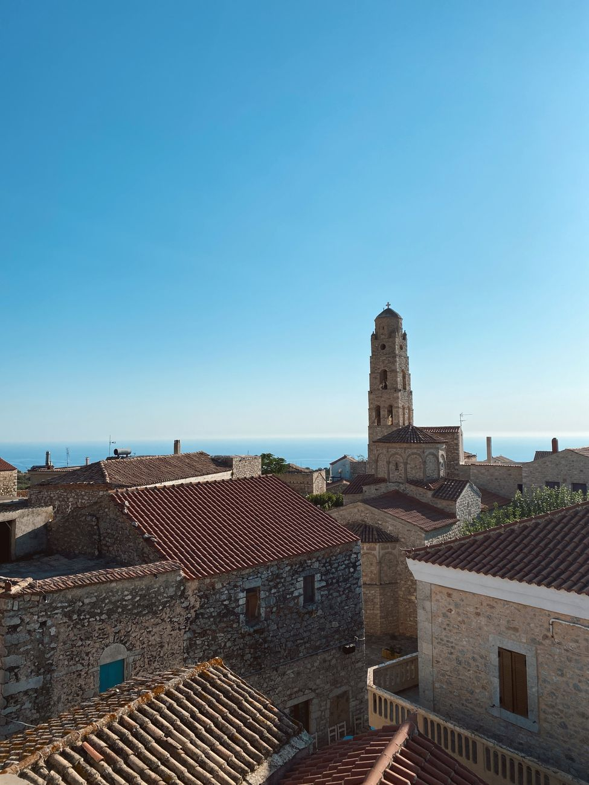
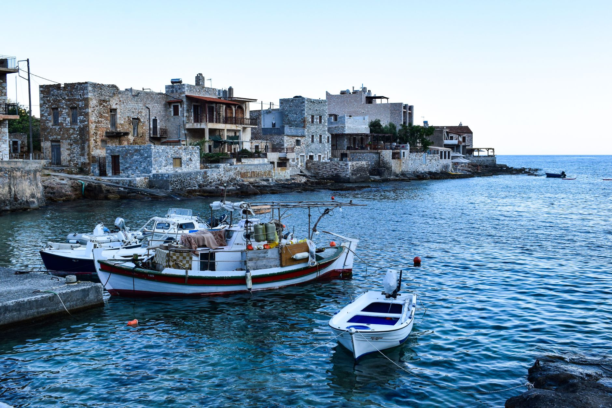
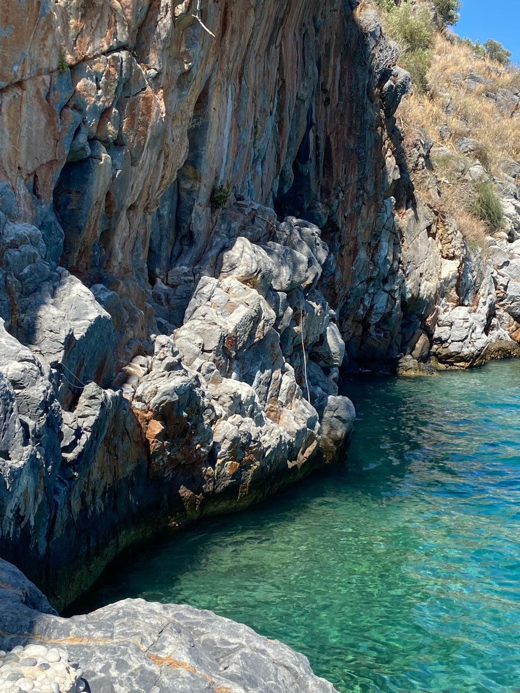

Photo: Sabrina So / Pexels
The Mani is the middle finger of the Peloponnese's three southern peninsulas, and it earned a reputation the other two didn't: isolated, rocky, and historically lawless enough that families built stone towers to defend against each other, not against outside invaders. This route runs Areopoli to Vathia to Gerolimenas to Cape Tainaro, the literal southern tip of mainland Greece.
Roads here are narrow and the peninsula is sparsely populated, so a car isn't optional if you want to see more than Areopoli itself.
-

AreopoliNamed for Ares, god of war, and the historic gateway into the Mani. -

VathiaThe best-preserved of Mani's tower-house villages, built so armed families could shoot over their neighbors' walls. -

GerolimenasA small fishing harbor, the last real stop before the peninsula narrows to a point. -

Cape TainaroThe southern tip of mainland Greece, believed in antiquity to be an entrance to the underworld.
Stop photos: Lydia Griva, ANMA Photography, Giota Sakellariou / Pexels
The tower houses in Vathia aren't reconstructions built for tourists. They're the real defensive architecture of a place where family feuds, not foreign armies, were the main threat for centuries.
Good to know before you drive it
- The Mani has almost no public transport between villages. If you want to see Vathia and Cape Tainaro in the same day, you need your own car.
- Greece's speed limits: 130 km/h on motorways, 90 km/h on national roads, 50 km/h in towns. The Mani's own roads are mostly narrow two-lane routes signed well below that.
- Fuel stations thin out fast past Areopoli. Fill up before heading toward Gerolimenas or the cape.
- 62 km is short, but the roads are winding enough, and the villages worth stopping in are frequent enough, that this is a full day at an easy pace.
Ready to book this drive? This route runs 62 km and about 1.4 hours behind the wheel, entirely inside Auto Europe's coverage area.
We book through Auto Europe. It compares Hertz, Sixt and the other major agencies in one search, with cross-border and one-way terms visible before checkout instead of buried in each company's own fine print.
Compare car rental prices →This is an affiliate link. Booking through it may earn Travel Gap a commission at no extra cost to you.
Read the full Europe road trip planning guide for what to check before you book anywhere on the continent.